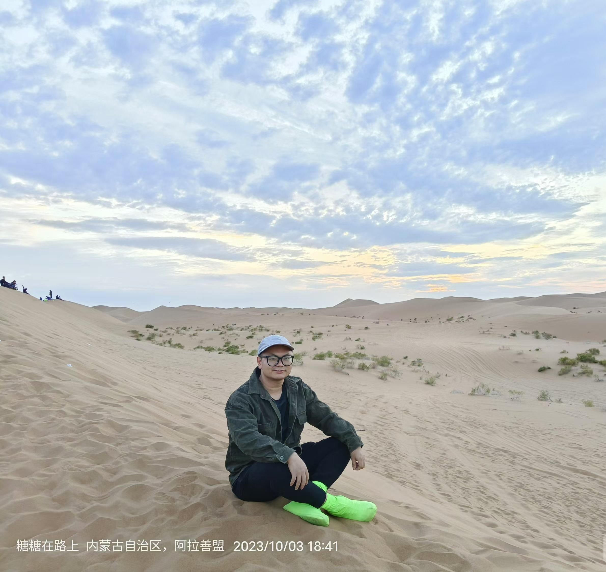
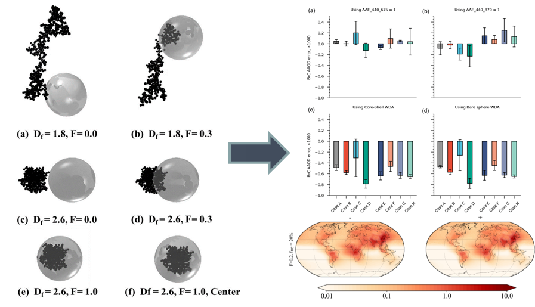

Dr. Jie Luo罗杰Pre-tenured Professor (特聘教授)
智能光电感知团队, 遥感及环境信息仿真课题组 |
 |


我当前为杭州电子科技大学通信工程学院特聘教授。博士毕业于中国科学技术大学，期间在美国圣路易斯华盛顿大学联合培养，毕业后分别担任中国科学院空天信息创新研究院助理研究员、之江实验室高级研究专员，曾担任之江星座预研阶段星载算法主任设计师。
当前作为研究骨干参与浙江省第一颗海洋卫星研制工作，担任Remote sensing、Frontiers in Remote Sensing等多个SCI期刊专刊客座编辑，担任多个中英文期刊编辑与编委。主要从事卫星遥感探测机理及图像信息处理工作，参与十余起航天工程论证。
研究方向主要为遥感信息处理、星载计算、气溶胶云气候效应、图像辐射定标，光散射及辐射传输计算、森林火灾烟雾遥感与监测等，主持国家自然基金青年项目1项，以技术负责人身份负责项目多项，发表SCI论文20余篇，其中第一作者13篇，受大气遥感领域国际顶级学者邀请撰写书籍章节1章，作为指导老师指导学生获中国国际大学生创新大赛国银、省金各一项。
社会任职
担任Frontiers in remote sensing等SCI期刊联合专刊“Remote Sensing for Environmental Monitoring”客座编辑
Remote sensing等SCI期刊联合专刊“Advances in Environmental Remote Sensing”客座编辑
担任Iris Journal of Astronomy and Satellite Communications (IJASC)编辑及编委
《三峡生态环境监测》期刊首届青年编委
中国计算机学会(CCF)会员
中国电子学会会员
中国颗粒学会会员
担任Atmospheric Chemistry and Physics, Atmospheric Measurement Techniques, Optics Express, Journal of geophysical research:Biogeosciences, Remote Sensing, Earth and space science等期刊审稿人
新闻
[2024年10月] 2024年10月12 - 15日，罗杰参加在上海交通大学举办的>中国国际大学生创新大赛，参与指导的《基于海洋光学遥感微纳卫星的高精定量监测装备》获国家银奖！

[2024年9月] 罗杰参与浙江省航空护林站直升机消防演习，见识了实际航空森林火灾灭火过程！
发表论文 [Google Scholar]
| Intrinsic organic carbon could contribute to the unexplained optical measurements of fresh soot Luo, J., Hu, M., Zhang, Q., Li, C., Liu, J., He, H., Li, K., Sun, Y. JGR: Atmosphere, Sep, 2024 |
|
|  | Quantifying the effects of the microphysical properties of black carbon on the determination of brown carbon Luo, J., Li, D., Wang, Y., Sun, D., Hou, W., Ren, J., Wu, H., Zhou, P., and Qiu, J. Atmos. Chem. Phys., Jan, 2024 |
荣誉与奖项
长安大学 “国家励志奖学金”(2013，2015)
长安大学 “国家奖学金”（2014）
中国科学技术大学 “研究生国家奖学金"(2018)
获国家留学基金委国家建设高水平大学公派研究生资助(2019)
受大气遥感领域著名学者Alexander Kokhanovsky邀请，参与合著名为《Springer Series in Light Scattering-Volume 7: Light Absorption and Scattering in Turbid Media》的书籍，负责撰写书籍第三章